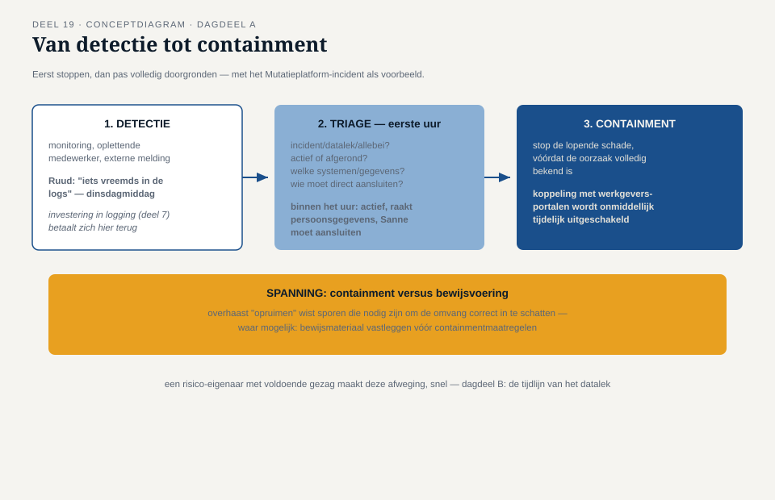

Deel 19 — Incidentmanagement en crisis
Reader · Ductus-cursus Informatiebeveiliging en privacy · niveau 2 (professional) · deel 19 van 22
Casusopening: het bericht dat Karin niet had verwacht
Het is een dinsdagmiddag, vier maanden na livegang van de eerste release van het Mutatieplatform. Ruud stuurt Merel een bericht: "Iets vreemds in de logs van de koppeling met de werkgeversportalen. Kun je even kijken?" Binnen een uur wordt duidelijk dat het geen vals alarm is: door een fout in de autorisatielogica van de koppeling zijn mutatiebestanden van meerdere werkgevers voor elkaar zichtbaar geweest — hoe lang precies, en hoeveel werkgevers en deelnemers het betreft, is nog niet bekend.
Dit is het moment waar de rest van niveau 2 naartoe heeft gewerkt: het managementsysteem uit deel 11, de risicobeoordeling uit deel 12, het uitzonderingenproces uit deel 13, de bewustwordingscultuur uit deel 14, de dreigingsmodellering uit deel 15, en de DPIA's uit deel 16 en 17 worden allemaal op de proef gesteld door één, echt incident. Dagdeel A behandelt het incidentproces in algemene zin — detectie, triage, containment; dagdeel B doorloopt het datalek zelf, tot en met de nazorg, met de 72-uursklok als drukmiddel.
Dagdeel A — Detectie, triage en containment
1. Van deel 9 naar een volwaardig proces
Deel 9 (niveau 1) introduceerde een eerste, minimaal incidentproces: één meldpunt, een tijdige beoordeling, een vaste verantwoordelijke, een vaste route naar de FG. Dat eerste proces is bij Meridiaan inmiddels operationeel — Ruuds bericht komt niet in een ongelezen mailbox terecht, maar bij Merel, precies zoals bedoeld. Dit deel formaliseert het proces verder tot het niveau dat een programma als het Mutatieplatform vereist.
2. Detectie
Een incident kan op meerdere manieren aan het licht komen: geautomatiseerde monitoring die een afwijkend patroon signaleert (deel 7, logging), een oplettende medewerker zoals Ruud, een externe melding (responsible disclosure, deel 9), of — het meest ongewenste scenario — een deelnemer of journalist die het incident eerder ontdekt dan de organisatie zelf. Hoe eerder in deze lijst de detectie plaatsvindt, hoe meer controle de organisatie heeft over het vervolg; dit is een directe, praktische reden waarom de investering in goede logging en monitoring (deel 7) zich hier terugbetaalt.
3. Triage: eerste vragen binnen het eerste uur
Zodra een mogelijk incident wordt gemeld, volgt triage: een snelle, eerste inschatting die bepaalt hoe serieus en hoe urgent de respons moet zijn. Kernvragen binnen het eerste uur:
- Is dit een beveiligingsincident, een datalek, allebei, of nog onduidelijk? (deel 9)
- Is het incident nog actief (loopt de blootstelling door) of afgerond (eenmalige gebeurtenis in het verleden)?
- Welke systemen en welke categorieën gegevens zijn mogelijk geraakt?
- Wie moet onmiddellijk worden geïnformeerd — volgens het eerste incidentproces uit deel 9, de route naar Sanne zodra persoonsgegevens mogelijk zijn geraakt?
Voor het Mutatieplatform-incident: binnen het eerste uur stelt Merel vast dat het een actief, nog lopend probleem betreft (de autorisatiefout in de koppeling is nog niet gerepareerd), dat het mutatiebestanden raakt — dus persoonsgegevens, mogelijk inclusief bijzondere categorieën gezien de aard van sommige mutaties — en dat Sanne onmiddellijk moet aansluiten.
4. Containment: stoppen vóór onderzoeken
Containment betekent het beperken van de lopende schade, vaak vóórdat de precieze oorzaak en omvang volledig bekend zijn. Voor het Mutatieplatform-incident: de koppeling met de werkgeversportalen wordt onmiddellijk tijdelijk uitgeschakeld — dit stopt de verdere blootstelling, ook al is op dat moment nog niet duidelijk hóe de autorisatiefout precies ontstond of hoeveel schade er al is aangericht.
Deze volgorde — eerst stoppen, dan pas volledig doorgronden — voelt voor sommigen onlogisch ("moeten we niet eerst weten wat er precies mis is?"), maar is doorgaans de juiste keuze: elke minuut dat de blootstelling doorloopt, vergroot de uiteindelijke omvang van het incident. Containment offert soms tijdelijk gebruiksgemak of functionaliteit op (de koppeling met werkgeversportalen ligt stil, wat operationele gevolgen heeft) ten gunste van het beperken van verdere schade — een afweging die, net als in deel 12, een risico-eigenaar met voldoende gezag moet kunnen maken, snel en zonder de trage besluitvorming van een normale situatie.
5. Containment versus bewijsvoering: een spanning
Er bestaat een reële spanning tussen snel ingrijpen (containment) en het behouden van bewijsmateriaal voor later onderzoek — het overhaast "opruimen" van een gecompromitteerd systeem kan sporen wissen die nodig zijn om te begrijpen wat er precies is gebeurd, wat weer nodig is om de omvang van het datalek correct in te schatten (cruciaal voor de melding in dagdeel B). Een goed incidentproces houdt hier expliciet rekening mee: waar mogelijk wordt bewijsmateriaal (logs, systeemtoestanden) vastgelegd vóórdat containmentmaatregelen worden uitgevoerd, zodat snelheid en zorgvuldigheid niet elkaars tegenpolen hoeven te zijn.

Dagdeel B — Het datalek
6. De omvang wordt duidelijk — gedeeltelijk
Achtenveertig uur na Ruuds eerste bericht is het beeld nog altijd onvolledig, maar wel al veel scherper: de autorisatiefout bleek zes weken actief te zijn geweest, negen werkgevers zijn erdoor geraakt, en naar schatting 1.200 tot 1.800 deelnemers hebben mutatiegegevens gehad die zichtbaar waren voor een andere werkgever dan hun eigen — het precieze aantal blijft onzeker omdat niet elke blootstelling automatisch betekent dat de gegevens ook daadwerkelijk zijn bekeken. Onder de geraakte mutaties bevinden zich enkele premievrijstellingsdossiers, die impliciet gezondheidsinformatie prijsgeven.
7. De 72-uursklok, opnieuw — nu onder echte druk
Deel 9 introduceerde de 72-uursmeldplicht als concept. Nu wordt hij voor het eerst in deze cursus onder echte tijdsdruk toegepast. Het bestuur, geconfronteerd met de onzekere omvang, wil begrijpelijk maar problematisch wachten tot alles zeker is voordat er iets wordt gemeld — "we willen niet onnodig paniek zaaien over iets dat misschien meevalt." Sanne herhaalt, kalm maar onverzettelijk, precies het punt uit deel 9: gefaseerd melden binnen 72 uur, met de op dat moment beschikbare informatie, is niet alleen toegestaan maar vereist — wachten tot volledige zekerheid is geen geldige reden om de eerste melding uit te stellen.
Dit is het scherpste moment van de hele niveau 2-casus, en het illustreert precies waarom deel 13 (het uitzonderingenproces) en deel 14 (cultuur en voorbeeldgedrag) niet losstaande onderwerpen waren: onder tijdsdruk is de verleiding het grootst om normen te laten varen "voor deze ene keer", en het is precies dan dat een organisatie moet kunnen bewijzen dat haar normen meer zijn dan woorden op papier.
8. De melding zelf
Binnen de 72 uur wordt een eerste melding aan de AP voorbereid, met de op dat moment beschikbare informatie: de aard van het incident (autorisatiefout in een koppeling), de voorlopige inschatting van omvang (negen werkgevers, 1.200-1.800 deelnemers, met de onzekerheidsmarge expliciet vermeld), de reeds genomen maatregelen (containment: de koppeling is uitgeschakeld), en de voorgenomen vervolgstappen (verder onderzoek, een tweede melding zodra de omvang preciezer bekend is). Sanne stelt bovendien vast dat, gezien de gezondheidsgerelateerde informatie in een deel van de geraakte mutaties, dit een hoog risico voor de betrokken deelnemers oplevert — wat betekent dat naast de AP-melding ook het informeren van de betrokken deelnemers zelf noodzakelijk is (deel 9, paragraaf 4).
9. Nazorg: meer dan het probleem oplossen
Nadat de acute crisis is gestabiliseerd, begint de nazorg-fase, die zelf uit meerdere onderdelen bestaat:
- Technisch herstel — de onderliggende autorisatiefout wordt structureel gerepareerd (niet alleen de koppeling weer aangezet zonder de oorzaak te verhelpen).
- Communicatie naar betrokkenen — de deelnemers wier gegevens zijn geraakt, ontvangen een heldere, eerlijke uitleg: wat er is gebeurd, wat het voor hen betekent, en welke stappen ze eventueel zelf kunnen overwegen.
- Intern leren — een gestructureerde evaluatie (vaak een post-mortem genoemd) die niet gericht is op het aanwijzen van een schuldige, maar op het begrijpen van de onderliggende oorzaak en het voorkomen van herhaling. Dit sluit aan bij de cultuur van "fout melden zonder straf" uit deel 14: een post-mortem werkt alleen als mensen eerlijk kunnen zijn over wat er misging, zonder daarbij zelf in de verdediging te hoeven schieten.
- Bijwerken van het ISMS — de risicobeoordeling van deel 12 wordt herzien in het licht van wat er daadwerkelijk is gebeurd, de Verklaring van Toepasselijkheid (deel 11) wordt waar nodig aangepast, en het incident wordt vastgelegd in het meldregister (deel 9).
10. Terug naar het bestuur
De post-mortem legt de onderliggende oorzaak bloot: de autorisatiefout ontstond doordat een uitzondering op de reguliere toegangsstandaard (deel 13) ooit was toegekend voor een tijdelijke integratie met een verouderd werkgeversportaal — een uitzondering die, in tegenstelling tot het proces uit deel 13, geen vervaldatum had gekregen en dus stilzwijgend was blijven bestaan, lang nadat het verouderde portaal was vervangen. Dit is geen toevallige samenloop: het is precies het scenario waar deel 13 al voor waarschuwde — een uitzondering zonder vervaldatum is een architecturale versie van de verlopen accounts uit deel 5, en dit incident is het bewijs dat die waarschuwing geen theoretische exercitie was.
Karin, die de post-mortem leidt, trekt de conclusie die de hele cursus tot dit punt heeft opgebouwd: niet één persoon heeft hier gefaald, maar een proces (het uitzonderingenbeheer) miste een sluitende borging. De structurele maatregel — een verplichte, geautomatiseerde herinnering en escalatie bij elke uitzondering zonder tijdig verlengde vervaldatum — wordt binnen het ISMS vastgelegd, niet als losse actie, maar als permanente aanpassing van het uitzonderingenproces zelf.